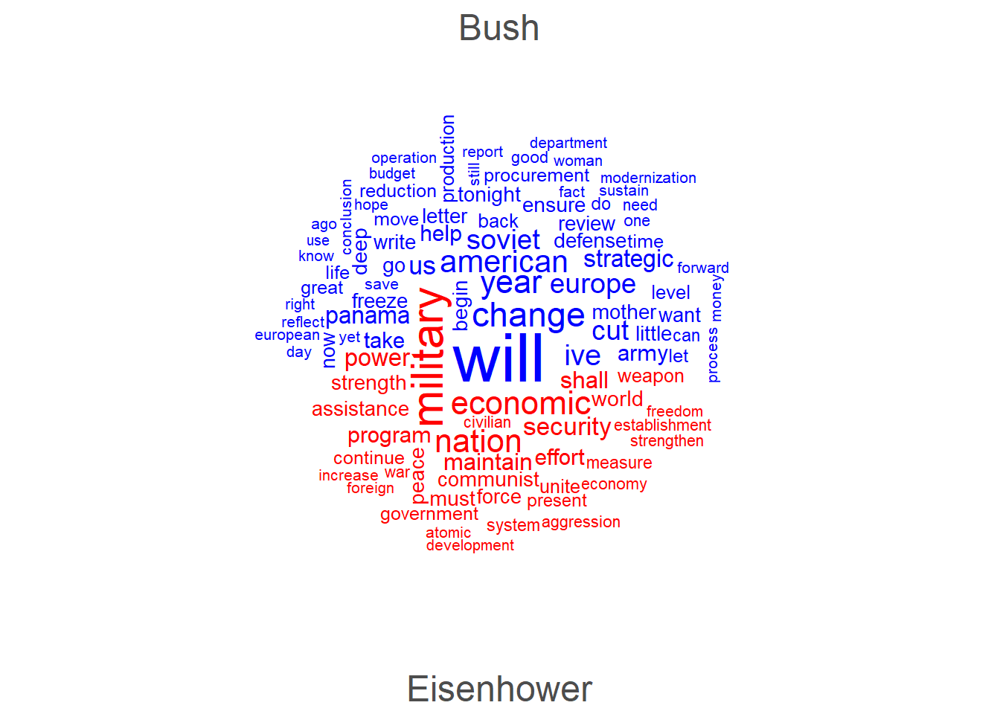

The Bag of Words model draws on a simple premise: the meaning
or content of a document can be represented by the frequency of the
words it contains, disregarding grammar, syntax, and word order. Using a
similar example as GRS (Ch. 5), imagine we wanted to understand
how military has been evoked across different
administrations’ State of the Union addresses. In particular, I want to
compare Presidents Eisenhower – who served as Supreme Commander of
Allied Forces in WWII – and George H.W. Bush – the last president to see
active combat (as a Navy pilot in WWII).
We’ll recover all of their addresses using sotu::() – a
CRAN package with a repository of all the addresses from
previous administrations.
library(sotu)
sotu_info <- sotu::sotu_meta %>%
filter(president %in% c('Dwight D. Eisenhower', 'George Bush')) # Get Info for Eisenhower and H.W.
head(sotu_info) # Print Head## X president year years_active party sotu_type
## 1 165 Dwight D. Eisenhower 1953 1953-1957 Republican written
## 2 167 Dwight D. Eisenhower 1954 1953-1957 Republican speech
## 3 168 Dwight D. Eisenhower 1955 1953-1957 Republican speech
## 4 169 Dwight D. Eisenhower 1956 1953-1957 Republican speech
## 5 170 Dwight D. Eisenhower 1956 1953-1957 Republican written
## 6 171 Dwight D. Eisenhower 1957 1957-1961 Republican speechindices <- c(sotu_info$X) # Indices to Partition sotu_text
sotu_eisenhower_bush <- setNames(
lapply(seq_len(nrow(sotu_info)), function(i) {
cbind(sotu_info[i, ], text = sotu::sotu_text[[indices[i]]])
}),
paste0(sotu_info$president, " (", sotu_info$year, ")")
) # Nest Each Speech in List
names(sotu_eisenhower_bush) # Print Names## [1] "Dwight D. Eisenhower (1953)" "Dwight D. Eisenhower (1954)"
## [3] "Dwight D. Eisenhower (1955)" "Dwight D. Eisenhower (1956)"
## [5] "Dwight D. Eisenhower (1956)" "Dwight D. Eisenhower (1957)"
## [7] "Dwight D. Eisenhower (1958)" "Dwight D. Eisenhower (1959)"
## [9] "Dwight D. Eisenhower (1960)" "Dwight D. Eisenhower (1961)"
## [11] "George Bush (1989)" "George Bush (1990)"
## [13] "George Bush (1991)" "George Bush (1992)"military_words_regex <- paste0('(', paste(c('military', 'army', 'navy', 'marines', 'air force'),
collapse = '|'), ')') # "Military" Words Regex
for (speech in 1:length(sotu_eisenhower_bush)){
temp_speech <- sotu_eisenhower_bush[[speech]]
temp_speech <- data.frame(stringr::str_split(temp_speech$text, pattern = '\\n')) %>%
setNames('text') %>%
filter(!text == '') # Grab Speech -- Partition to Sentences
sotu_eisenhower_bush[[speech]]$text <- list(temp_speech) # Append Back to Original
military_sentences <- temp_speech %>%
filter(grepl(military_words_regex, text, ignore.case = T)) # All Sentences w/ "Military" Words
sotu_eisenhower_bush[[speech]]$military_text <- list(military_sentences) # Append
} # Process Speeches & Isolate "Military" Sentences
for (speech in 1:length(sotu_eisenhower_bush)){
temp_speech_name <- names(sotu_eisenhower_bush[speech])
military_sentences <- length(unlist(sotu_eisenhower_bush[[speech]]$military_text))
cat(temp_speech_name, ' -- ', military_sentences, ' Sentences \n')
} # Prints # of "Military" Sentences Per Speech## Dwight D. Eisenhower (1953) -- 12 Sentences
## Dwight D. Eisenhower (1954) -- 15 Sentences
## Dwight D. Eisenhower (1955) -- 17 Sentences
## Dwight D. Eisenhower (1956) -- 0 Sentences
## Dwight D. Eisenhower (1956) -- 9 Sentences
## Dwight D. Eisenhower (1957) -- 8 Sentences
## Dwight D. Eisenhower (1958) -- 25 Sentences
## Dwight D. Eisenhower (1959) -- 11 Sentences
## Dwight D. Eisenhower (1960) -- 6 Sentences
## Dwight D. Eisenhower (1961) -- 7 Sentences
## George Bush (1989) -- 4 Sentences
## George Bush (1990) -- 6 Sentences
## George Bush (1991) -- 1 Sentences
## George Bush (1992) -- 2 Sentencesunlist(sotu_eisenhower_bush[[14]]$military_text) # Bush 1992 -- Print Example## text1
## "Two years ago, I began planning cuts in military spending that reflected the changes of the new era. But now, this year, with imperial communism gone, that process can be accelerated. Tonight I can tell you of dramatic changes in our strategic nuclear force. These are actions we are taking on our own because they are the right thing to do. After completing 20 planes for which we have begun procurement, we will shut down further production of the B - 2 bombers. We will cancel the small ICBM program. We will cease production of new warheads for our sea-based ballistic missiles. We will stop all new production of the Peacekeeper missile. And we will not purchase any more advanced cruise missiles. "
## text2
## "The Secretary of Defense recommended these cuts after consultation with the Joint Chiefs of Staff. And I make them with confidence. But do not misunderstand me. The reductions I have approved will save us an additional $50 billion over the next 5 years. By 1997, we will have cut defense by 30 percent since I took office. These cuts are deep, and you must know my resolve: This deep, and no deeper. To do less would be insensible to progress, but to do more would be ignorant of history. We must not go back to the days of \"the hollow army.\" We cannot repeat the mistakes made twice in this century when armistice was followed by recklessness and defense was purged as if the world were permanently safe. "military_speeches <- data.frame()
for (i in 1:length(sotu_eisenhower_bush)){
temp_military <- unlist(sotu_eisenhower_bush[[i]]$military_text)
if (length(temp_military) == 0){
next
}
temp_speech <- names(sotu_eisenhower_bush[i])
temp_df <- data.frame(speech = temp_speech,
military_text = temp_military)
military_speeches <- bind_rows(military_speeches, temp_df)
} # Combine to Single DF
military_speeches$president <- ifelse(grepl("Eisenhower", military_speeches$speech),
"Eisenhower", "Bush") # Add President ID
reduce_complexity <- function(text){
text <- tolower(text) # Lower Case
text <- tm::removePunctuation(text) # Punctuation
text <- tm::removeNumbers(text) # Numbers
text <- removeWords(text, tm::stopwords("english")) # Stop Words
text <- unlist(stringr::str_split(text, '\\s+')) # Tokenize
text <- textstem::lemmatize_words(text) # Lemmatize
text <- paste(text, collapse = ' ') # Re-Append
text <- gsub("\\s{2,}", ' ', text) # 2 or More Spaces --> One Space
text <- trimws(text) # White Space
return(text)
} # Function to Process Text for Bag of Words
military_speeches$military_text[1] # Print Regular Text## [1] "But the problem of security demands closer cooperation among the nations of Europe than has been known to date. Only a more closely integrated economic and political system can provide the greatly increased economic strength needed to maintain both necessary military readiness and respectable living standards. "reduce_complexity(military_speeches$military_text[1]) # Processed Text Example## [1] "problem security demand close cooperation among nation europe know date closely integrate economic political system can provide greatly increase economic strength need maintain necessary military readiness respectable live standard"military_speeches <- military_speeches %>%
mutate(military_text_clean = sapply(military_text, reduce_complexity)) # Apply Complexity Reduction
sotu_corpus <- quanteda::corpus(military_speeches, text_field = "military_text_clean") # Convert to Corpus Object
sotu_tokens <- quanteda::tokens(sotu_corpus) # Recover Tokens from Corpus Object
sotu_dfm <- dfm(sotu_tokens) %>%
dfm_trim(min_termfreq = 2) # Convert to DFM -- Remove Words w/ Less Than 2 Appearances
topfeatures(sotu_dfm, 20) # 20-top Features (Words)## military will defense must force nation security economic
## 132 65 50 44 43 40 38 34
## program world strength make continue year new power
## 34 32 31 29 28 28 26 24
## peace need maintain shall
## 24 23 22 22president_dfm <- dfm_group(sotu_dfm, groups = military_speeches$president) # Group DFM by President
# View top words per president
top_words_president <- quanteda.textstats::textstat_frequency(sotu_dfm, n = 15, groups = military_speeches$president) # Top Words by Admin
# Optional: visualize with wordcloud or comparison plot
quanteda.textplots::textplot_wordcloud(president_dfm, comparison = TRUE, max_words = 100,
color = c("blue", "red"))